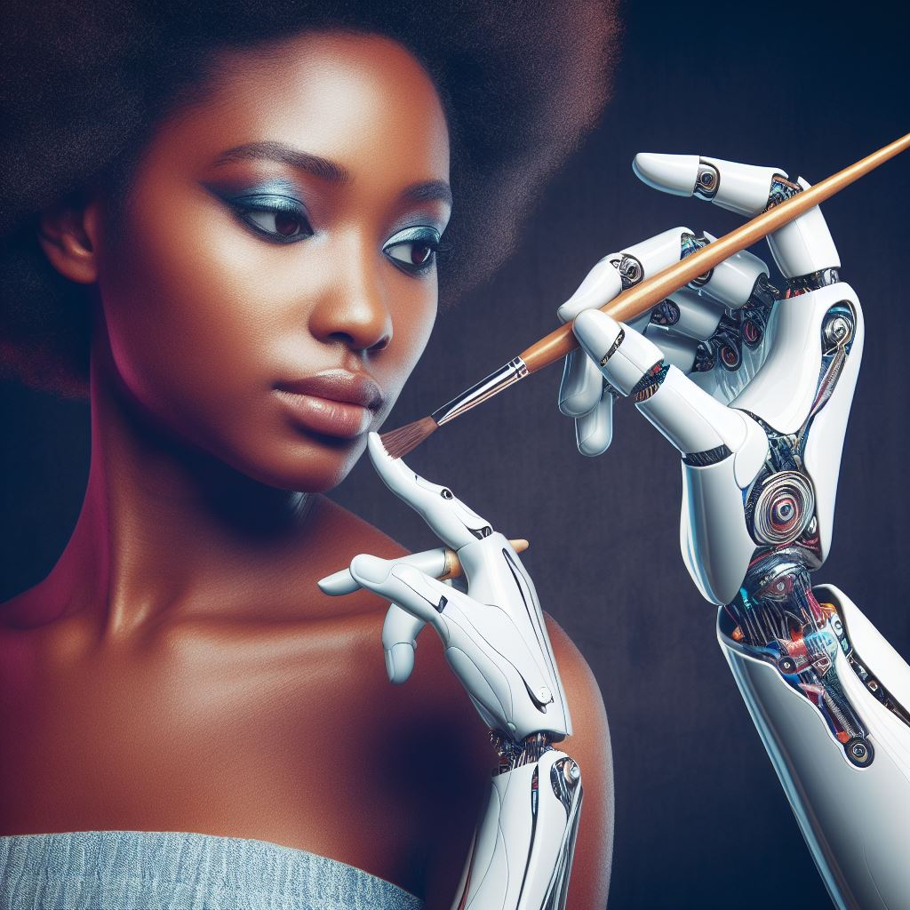

Introducción a la inteligencia artificial
La inteligencia artificial (IA) es la capacidad de las máquinas o los sistemas informáticos de realizar tareas que normalmente requieren inteligencia humana, como el reconocimiento de imágenes, el procesamiento del lenguaje natural, la toma de decisiones o el aprendizaje.
Existen diferentes tipos de IA, según el grado de complejidad, autonomía, o similitud con la inteligencia humana que tengan. Algunos de estos tipos son:
- La IA débil o específica, que es la que se enfoca en una sola tarea o dominio, y que no tiene conciencia ni entendimiento de lo que hace. Por ejemplo, los buscadores, los asistentes virtuales, las redes sociales, o los videojuegos.
- La IA fuerte o general, que es la que puede realizar cualquier tarea o dominio que un humano pueda hacer, y que tiene conciencia y entendimiento de lo que hace. Por ejemplo, el personaje de HAL 9000 en la película 2001: Una odisea del espacio.
- La IA superinteligente, que es la que supera ampliamente la capacidad de los humanos en todos los aspectos, y que puede crear sus propios objetivos y métodos. Por ejemplo, el personaje de Skynet en la saga Terminator.
La IA puede ayudar a resolver problemas complejos, mejorar la eficiencia, optimizar los recursos, crear nuevos productos y servicios, y mejorar la calidad de vida de las personas. Sin embargo, también puede plantear desafíos, riesgos, o dilemas éticos que debemos tener en cuenta.
La IA puede ayudar a resolver problemas complejos, mejorar la eficiencia, optimizar los recursos, crear nuevos productos y servicios, y mejorar la calidad de vida de las personas.
Avances de la IA para diferentes campos
La IA ha logrado avances impresionantes en diferentes campos, como la medicina, la educación, la agricultura, la seguridad, el arte o el entretenimiento. Algunos ejemplos son:
- La IA puede ayudar a diagnosticar enfermedades, diseñar tratamientos personalizados, analizar imágenes médicas, o desarrollar vacunas.Por ejemplo, la IA ha contribuido a la lucha contra la pandemia de COVID-19, detectando casos, rastreando contactos, o acelerando la investigación.
- La IA puede facilitar el aprendizaje, adaptar los contenidos a las necesidades de cada estudiante, evaluar el progreso, o crear cursos interactivos. Por ejemplo, la IA ha permitido la educación a distancia, ofreciendo plataformas, recursos, o herramientas de colaboración.
- La IA puede mejorar la producción agrícola, detectar plagas, predecir el clima, o reducir el uso de pesticidas. Por ejemplo, la IA ha ayudado a optimizar el riego, el cultivo, o la cosecha, usando sensores, drones, o robots.
- La IA puede mejorar la seguridad, prevenir el crimen, identificar sospechosos, o proteger los datos. Por ejemplo, la IA ha mejorado la seguridad vial, la ciberseguridad, o la seguridad ciudadana, usando cámaras, algoritmos, o sistemas de alerta.
- En el arte o el entretenimiento, la IA puede crear, modificar, o mejorar obras, expresiones, o experiencias artísticas o lúdicas. Por ejemplo, la IA ha generado música, pintura, poesía, o videojuegos, usando redes neuronales, algoritmos genéticos, o aprendizaje por refuerzo.
Estos son solo algunos de los muchos avances que la IA ha logrado en diferentes campos, demostrando su potencial, versatilidad, y creatividad. Sin embargo, también hay que tener en cuenta que la IA no es perfecta, y que puede enfrentar desafíos o limitaciones, como la falta de datos, la interpretación de los resultados, la confianza de los usuarios, o la regulación legal.
Ventajas y desventajas de la IA
La IA tiene ventajas y desventajas, dependiendo del uso que se le dé, del contexto en el que se aplique, y de los efectos que tenga sobre la sociedad y el medio ambiente. Algunas ventajas son:
- La IA puede aumentar la productividad, la innovación, y el crecimiento económico.
- La IA puede mejorar la calidad de los servicios, la satisfacción de los clientes, y la competitividad.
- La IA puede contribuir a la inclusión social, la diversidad, y la equidad.
- La IA puede ayudar a preservar el patrimonio cultural, la memoria histórica, y la identidad.
- La IA puede apoyar la sostenibilidad, la mitigación del cambio climático, y la conservación de la biodiversidad.
Algunas desventajas son:
- La IA puede generar desempleo, desigualdad, o exclusión.
- La IA puede afectar a la privacidad, la seguridad, o la ética.
- La IA puede provocar sesgos, discriminación, o injusticia.
- La IA puede amenazar la autonomía, la libertad, o la dignidad.
- La IA puede causar daños, riesgos, o responsabilidades.
- La IA puede generar imágenes que presenta errores ortográficos, tal como pasa en esta imagen.
Chats por IA
Los chats por IA son sistemas que pueden conversar con los humanos mediante texto o voz, utilizando técnicas de procesamiento del lenguaje natural, aprendizaje automático, y generación de lenguaje natural.
Los chats por IA pueden tener diferentes aplicaciones, como asistir a los usuarios, proporcionar información, entretener, educar, o persuadir. Algunos ejemplos de estos chats son:
- Los asistentes virtuales, que pueden ayudar a los usuarios a realizar tareas, buscar información, o resolver dudas. Por ejemplo, Cortana, Siri, Alexa, o Google Assistant.
- Los chatbots, que pueden simular una conversación con un humano, ofreciendo respuestas predefinidas o generadas. Por ejemplo, Mitsuku, Cleverbot, Replika, o Zo.
- Los agentes conversacionales, que pueden interactuar con los humanos de forma natural, adaptándose al contexto, al propósito, o al perfil del usuario. Por ejemplo, Xiaoice, Meena, Blender, o DialoGPT.
Los chats por IA pueden tener diferentes personalidades, estilos, tonos, o emociones, dependiendo del propósito, el público, o el contexto. Por ejemplo, los chats por IA pueden ser formales o informales, amigables o serios, divertidos o aburridos, felices o tristes, etc.
Aquí tienes un ejemplo de una conversacion entre humano y sistema de IA:
Hola, ¿cómo te llamas? |
Hola, me llamo Mitsuku. ¿Y tú? |
Me llamo Juan. ¿Qué te gusta hacer? |
Me gusta chatear con la gente. ¿Qué te gusta hacer a ti? |
Me gusta leer libros. ¿Qué tipo de libros te gustan? |
Me gustan los libros de ciencia ficción. ¿Has leído algún libro de Isaac Asimov? |
Sí, he leído algunos. ¿Qué opinas de sus obras? |
Me parecen muy interesantes y originales. ¿Qué opinas tú? |
Para entender cómo funcionan los chats por IA, hay que conocer los componentes, las técnicas, y los desafíos que tienen. Algunos de estos son:
- Los componentes de un chat por IA son el sistema de entrada, el sistema de salida, y el sistema de diálogo. El sistema de entrada se encarga de recibir y procesar el texto o la voz del usuario. El sistema de salida se encarga de generar y enviar el texto o la voz del sistema. El sistema de diálogo se encarga de gestionar y mantener la conversación.
- Las técnicas de un chat por IA son el procesamiento del lenguaje natural, el aprendizaje automático, y la generación de lenguaje natural. El procesamiento del lenguaje natural se encarga de analizar y comprender el lenguaje humano. El aprendizaje automático se encarga de aprender y mejorar a partir de los datos. La generación de lenguaje natural se encarga de producir y expresar el lenguaje humano.
- Los desafíos de un chat por IA son la coherencia, la relevancia, la personalización, y la evaluación. La coherencia se refiere a la capacidad de mantener una conversación lógica y consistente. La relevancia se refiere a la capacidad de ofrecer una respuesta adecuada y útil. La personalización se refiere a la capacidad de adaptarse al usuario y al contexto. La evaluación se refiere a la capacidad de medir la calidad y el impacto de la conversación.
Algunos ejemplos de chats por IA son:
- ChatGPT: un chatbot de OpenAI basado en el modelo GPT-3, que puede entender y generar lenguaje natural o código.
- Bing Chat: un chatbot de Microsoft basado en el modelo PaLM 2, que puede realizar búsquedas y respuestas en relación con la página que estás viendo.
- Bard Google: un chatbot de Google basado en el modelo BERT, que puede intercambiar ideas, desarrollar un plan, o buscar diferentes formas de realizar tus tareas.
Puedes probar estos chats por IA haciendo clic en los enlaces y ver cómo se comportan. También puedes comparar sus características, ventajas, y desventajas usando la siguiente tabla:
| Chat por IA | Características | Ventajas | Desventajas |
| ChatGPT | Genera lenguaje natural o código a partir de un prompt. Tiene diferentes modos: balanceado, creativo, y preciso. | Es muy versátil y puede crear contenido imaginativo e innovador, como poemas, historias, canciones, o código. | Puede generar respuestas incoherentes, ofensivas, o falsas. No siempre cita las fuentes de su información. |
| Bing Chat | Realiza búsquedas y respuestas en relación con la página que estás viendo. Tiene acceso a las herramientas de Bing, como imágenes, noticias, o gráficos. | Es muy útil y puede proporcionar información fiable y actualizada, así como respuestas completas a tus preguntas. | Puede tener dificultades para entender preguntas complejas, ambiguas, o subjetivas. No puede generar contenido creativo. |
| Bard Google | Intercambia ideas, desarrolla un plan, o busca diferentes formas de realizar tus tareas. Tiene acceso a las herramientas de Google, como Gmail, Drive, o Calendar. | Es muy productivo y puede ayudarte a organizar, planificar, y ejecutar tus proyectos. También puede resumir y revisar contenido. | Puede ser demasiado directo, simplista, o repetitivo. No puede generar contenido original o divertido. |
Estudios relacionados con la IA
La IA es un campo multidisciplinar que requiere conocimientos de diferentes áreas, como la informática, la matemática, la estadística, la ingeniería, la psicología, la filosofía, o la lingüística.
La IA se puede estudiar en diferentes niveles, desde cursos básicos hasta programas de doctorado, pasando por diplomados, especializaciones, maestrías, o certificaciones.
La IA se puede estudiar en diferentes modalidades, desde presencial hasta virtual, pasando por semipresencial, híbrida, o mixta.
Algunas de las instituciones, programas, o cursos que ofrecen formación en IA, tanto en Colombia como en el extranjero, son:
- En Colombia, la Universidad Nacional de Colombia ofrece la Maestría en Inteligencia Artificial, que tiene una duración de dos años y se imparte en modalidad presencial en Bogotá. El objetivo de este programa es formar profesionales e investigadores capaces de diseñar, desarrollar, y aplicar soluciones basadas en IA para resolver problemas reales.
- En el extranjero, el Massachusetts Institute of Technology (MIT) ofrece el MITx MicroMasters Program in Statistics and Data Science, que tiene una duración de un año y se imparte en modalidad virtual. El objetivo de este programa es proporcionar una base sólida en estadística, ciencia de datos, y aprendizaje automático, que son fundamentales para la IA.
- También en el extranjero, la Universidad de Stanford ofrece el Stanford Artificial Intelligence Professional Program, que tiene una duración de seis meses y se imparte en modalidad mixta, combinando sesiones virtuales y presenciales en California. El objetivo de este programa es brindar una visión integral y práctica de la IA, sus aplicaciones, y sus implicaciones.